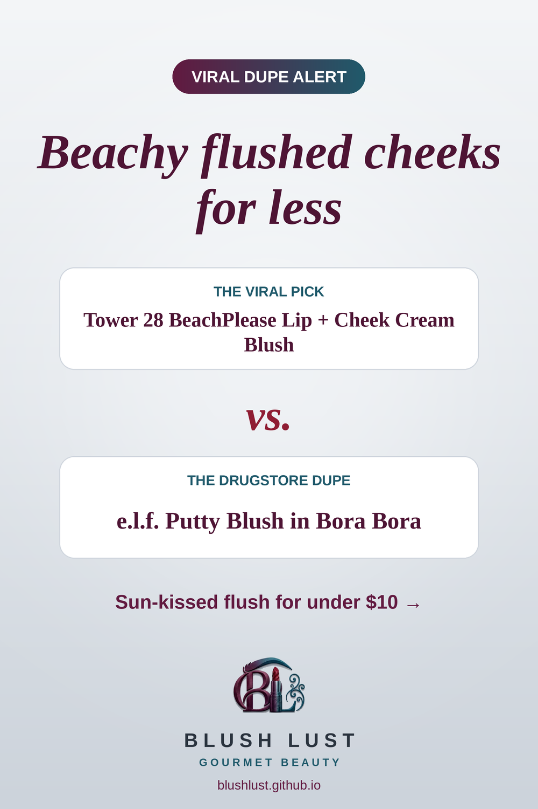

The cream-to-powder blush, for less
A creamy, highly pigmented blush that melts into skin and sets to a soft, natural flush.
This post contains affiliate links. If you buy through them, we may earn a small commission at no extra cost to you. As an Amazon Associate I earn from qualifying purchases.
e.l.f. Putty Blush in Bora Bora
The viral pickTower 28 BeachPlease Lip + Cheek Cream Blush
vs.
The dupee.l.f. Putty Blush in Bora Bora

See today’s price on Amazon.ca →
Comparisons reflect what beauty shoppers commonly say, not lab testing. Shades and formulas vary — check reviews before you buy.